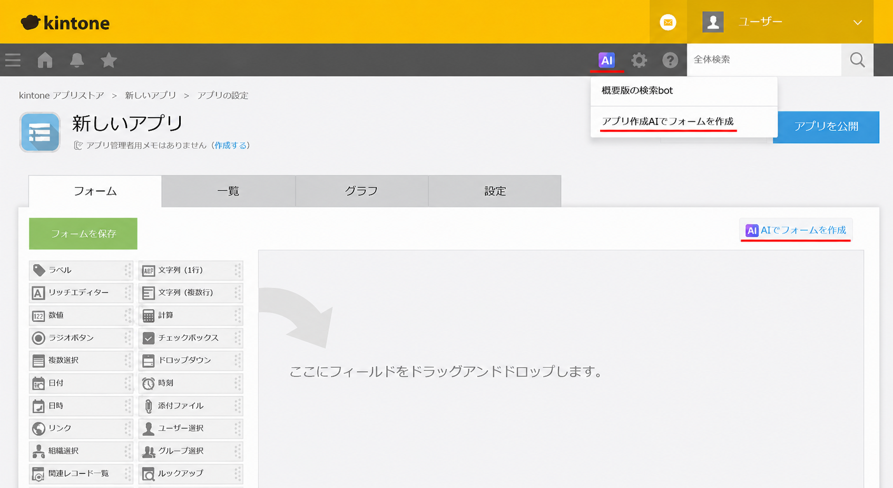
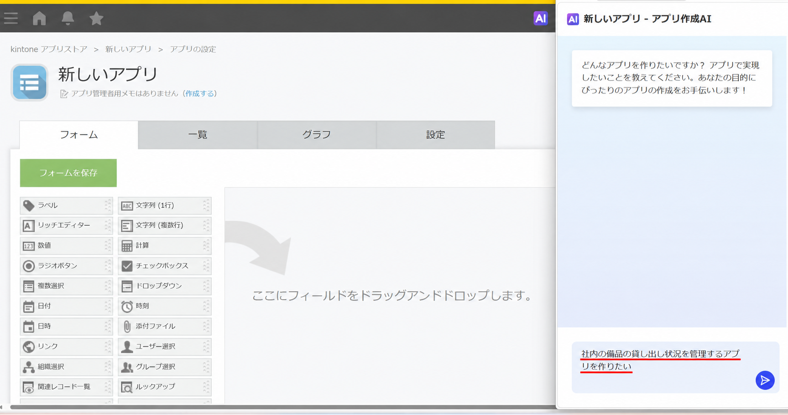
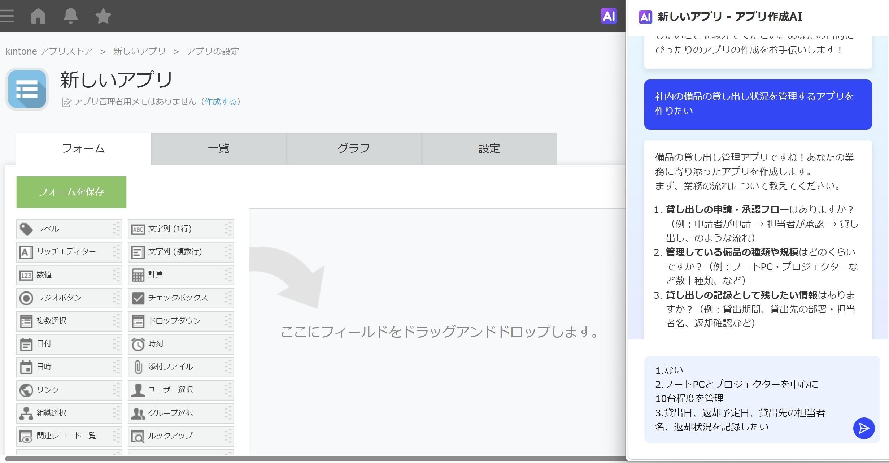
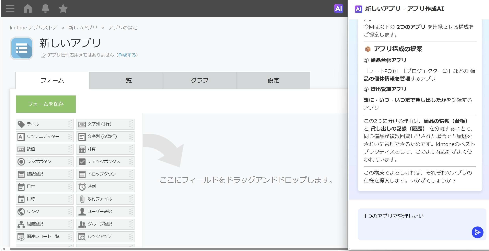
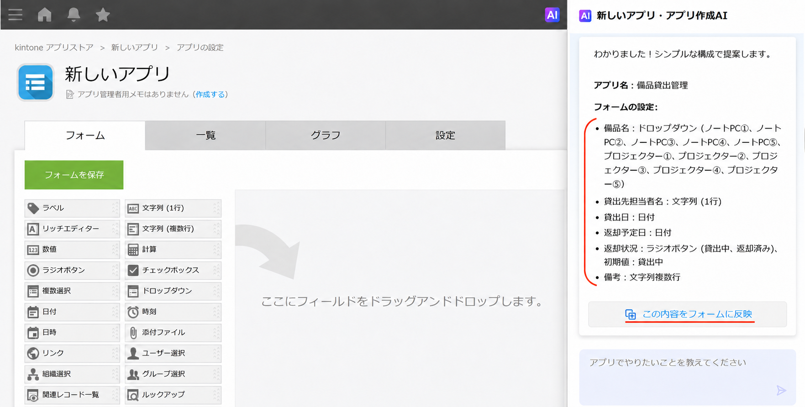
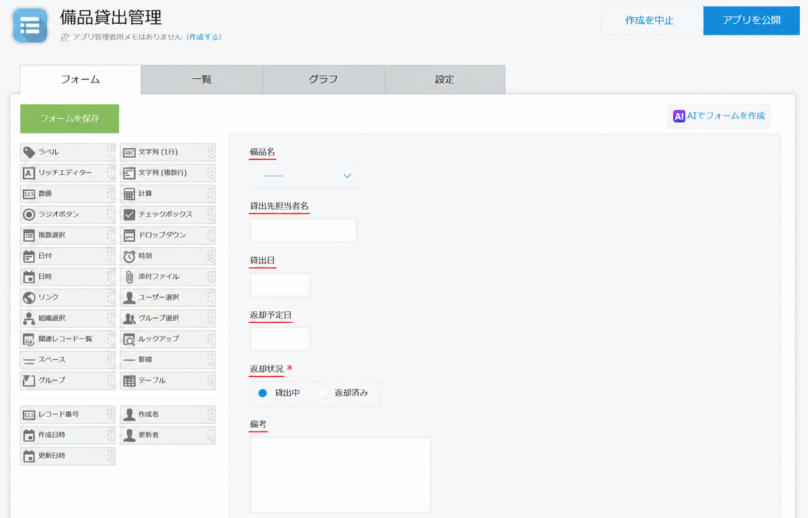
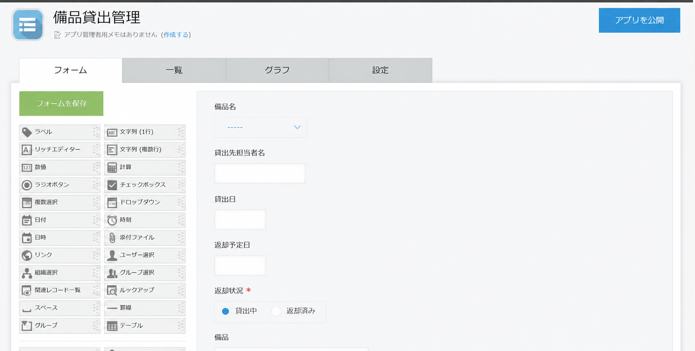

kintoneのアプリ作成AIを使って、社内の備品貸出状況を管理するアプリを作ってみました。
作りたい業務をAIに伝え、質問に回答していくだけで、必要な項目を整理しながらアプリを設計できます。
実際の画面とともに、その流れをご紹介します。
はじめに
kintoneでは、業務に合わせてさまざまなアプリを作成できます。
一方で、「どのような項目を設定すればよいかわからない」「業務に合ったアプリの構成を考えるのが難しいのでは」と感じる方もいらっしゃるのではないでしょうか。
今回は、kintoneのアプリ作成AIを利用し、社内の備品貸出状況を管理するアプリを作成しました。実際の画面とともに、アプリ作成の流れをご紹介します。
1．アプリ作成AIを起動する
まず、kintoneのアプリ作成画面から、アプリ作成AIを起動します。
フォーム作成画面の右上の「AIでフォームを作成」、もしくは画面上部のAIアイコンをクリックし、「アプリ作成AIでフォームを作成」を選択してアプリ作成AIを開きます。

2．作りたいアプリの内容を伝える
アプリ作成AIを利用すると、作りたいアプリの内容を文章で伝えながら、AIと対話形式でアプリの構成を検討できます。
今回は、最初に次の内容を入力しました。
「社内の備品の貸し出し状況を管理するアプリを作りたい」

この時点では、必要な項目や細かな設定をすべて決めておく必要はありません。まずは「どのような業務を管理したいか」をAIに伝えます。
3．AIからの質問に回答する
作りたいアプリの内容を伝えると、AIから業務の流れや管理方法について質問が表示されました。

今回は、主に次の内容について確認されました。
- 貸し出しの申請・承認フローの有無
- 管理する備品の種類や規模
- 記録しておきたい貸し出し情報
できるだけシンプルな構成とするため、次のように回答しました。
- 申請・承認フローは設けない
- ノートPCとプロジェクターを中心に10台程度を管理
- 貸出日、返却予定日、貸出先担当者名、返却状況を記録する
このように、AIからの質問に回答していくことで、管理したい内容を整理しながらアプリの構成を検討できます。
4．AIからアプリ構成の提案を受ける
対話を進めると、AIから、
の2つに分けて管理する構成が提案されました。

備品情報と貸出履歴を分けて管理する方法は、継続的な運用を考えるうえで有効な方法の一つです。
ただし今回は、初心者の方にもわかりやすい構成とするため、「1つのアプリで管理したい」とAIに伝えました。
AIからの提案をそのまま採用するだけでなく、目的や運用方法に合わせて条件を追加しながら調整できます。
5．アプリの構成を決定する
今回は、1回の貸し出しごとに1件のレコード（アプリに登録するデータ）を登録する運用としました。
その結果、AIから「備品貸出管理」というアプリ名と、次のフォーム（データを入力するための画面）構成が提案されました。

業務内容を文章で伝え、質問に回答していくことで、必要な項目が整理されました。
アプリ設計に慣れていない場合でも、対話を通じて構成を検討できる点は、アプリ作成AIの活用方法の一つといえます。
6．提案内容をフォームへ反映する
AIから提案された内容を確認し、「この内容をフォームに反映」を選択します。すると、提案内容に基づいたフォームが作成されました。

今回のフォームには、「備品名」「貸出先担当者名」「貸出日」「返却予定日」「返却状況」「備考」の各項目が配置されています。
必要に応じて、作成後にフィールド（情報を入力するための「項目」）の追加や変更を行うこともできます。
7．内容を確認し、アプリを公開する
AIの提案内容がフォームに反映されたら、必要な項目が設定されているかを確認します。内容を確認したら、画面右上の「アプリを公開」をクリックします。

これで、備品貸出管理アプリの作成は完了です。
今回は、最初に「社内の備品の貸し出し状況を管理するアプリを作りたい」と入力し、その後はAIからの質問に回答しながら、必要な項目や管理方法を整理していきました。
専門的な設定を一から考えるのではなく、AIと対話を重ねながらアプリの形を検討できるため、初めてkintoneでアプリを作成する場合にも活用しやすい機能だと感じます。
まとめ
今回、kintoneのアプリ作成AIを利用して、備品貸出管理アプリを作成する流れをご紹介しました。
最初に入力したのは、「社内の備品の貸し出し状況を管理するアプリを作りたい」というシンプルな内容でした。
その後、AIからの質問に回答していくことで、必要な項目や管理方法を整理しながら、アプリの構成を検討することができました。また、AIからの提案を参考にしつつ、実際の業務内容や運用方法に合わせて調整することも可能です。
「何を管理したいかは決まっているものの、どのような項目を設定すればよいかわからない」といった場合にも、アプリ作成AIを活用することで、アプリ設計の第一歩を進めやすくなります。今回のようなシンプルな管理業務をはじめ、さまざまな業務に応じたアプリ作成への活用が期待できます。